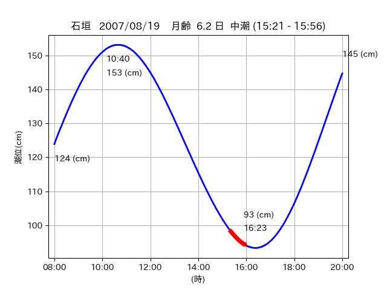
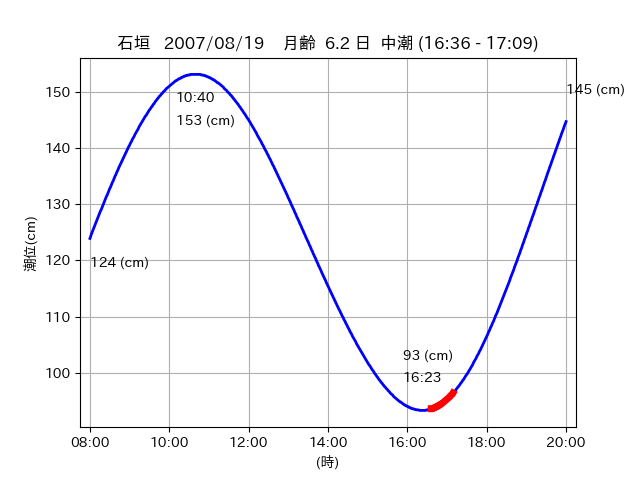

<!DOCTYPE html>
<html>
<head>
    
    <meta http-equiv="content-type" content="text/html; charset=UTF-8" />
    
        <script>
            L_NO_TOUCH = false;
            L_DISABLE_3D = false;
        </script>
    
    <style>html, body {width: 100%;height: 100%;margin: 0;padding: 0;}</style>
    <style>#map {position:absolute;top:0;bottom:0;right:0;left:0;}</style>
    <script src="https://cdn.jsdelivr.net/npm/leaflet@1.9.3/dist/leaflet.js"></script>
    <script src="https://code.jquery.com/jquery-3.7.1.min.js"></script>
    <script src="https://cdn.jsdelivr.net/npm/bootstrap@5.2.2/dist/js/bootstrap.bundle.min.js"></script>
    <script src="https://cdnjs.cloudflare.com/ajax/libs/Leaflet.awesome-markers/2.0.2/leaflet.awesome-markers.js"></script>
    <link rel="stylesheet" href="https://cdn.jsdelivr.net/npm/leaflet@1.9.3/dist/leaflet.css"/>
    <link rel="stylesheet" href="https://cdn.jsdelivr.net/npm/bootstrap@5.2.2/dist/css/bootstrap.min.css"/>
    <link rel="stylesheet" href="https://netdna.bootstrapcdn.com/bootstrap/3.0.0/css/bootstrap-glyphicons.css"/>
    <link rel="stylesheet" href="https://cdn.jsdelivr.net/npm/@fortawesome/fontawesome-free@6.2.0/css/all.min.css"/>
    <link rel="stylesheet" href="https://cdnjs.cloudflare.com/ajax/libs/Leaflet.awesome-markers/2.0.2/leaflet.awesome-markers.css"/>
    <link rel="stylesheet" href="https://cdn.jsdelivr.net/gh/python-visualization/folium/folium/templates/leaflet.awesome.rotate.min.css"/>
    
            <meta name="viewport" content="width=device-width,
                initial-scale=1.0, maximum-scale=1.0, user-scalable=no" />
            <style>
                #map_c9d6d364db7179e896d12e2ca0ea9354 {
                    position: relative;
                    width: 2048.0px;
                    height: 1600.0px;
                    left: 0.0%;
                    top: 0.0%;
                }
                .leaflet-container { font-size: 1rem; }
            </style>
        
</head>
<body>
    
    
            <div class="folium-map" id="map_c9d6d364db7179e896d12e2ca0ea9354" ></div>
        
</body>
<script>
    
    
            var map_c9d6d364db7179e896d12e2ca0ea9354 = L.map(
                "map_c9d6d364db7179e896d12e2ca0ea9354",
                {
                    center: [24.367, 123.958],
                    crs: L.CRS.EPSG3857,
                    ...{
  "zoom": 12,
  "zoomControl": true,
  "preferCanvas": false,
}

                }
            );

            

        
    
            var tile_layer_c406d47f0d36a222d3f35c4d519d2e85 = L.tileLayer(
                "https://cyberjapandata.gsi.go.jp/xyz/seamlessphoto/{z}/{x}/{y}.jpg",
                {
  "minZoom": 0,
  "maxZoom": 18,
  "maxNativeZoom": 18,
  "noWrap": false,
  "attribution": "\u5730\u7406\u9662\u5730\u56f3",
  "subdomains": "abc",
  "detectRetina": false,
  "tms": false,
  "opacity": 1,
}

            );
        
    
            tile_layer_c406d47f0d36a222d3f35c4d519d2e85.addTo(map_c9d6d364db7179e896d12e2ca0ea9354);
        
    
            var marker_18ce461cfebf7f639bc4b8a3061e4320 = L.marker(
                [24.3718, 123.9509],
                {
}
            ).addTo(map_c9d6d364db7179e896d12e2ca0ea9354);
        
    
            var icon_a30552a209964eff734c53f77b697311 = L.AwesomeMarkers.icon(
                {
  "markerColor": "orange",
  "iconColor": "white",
  "icon": "info-sign",
  "prefix": "glyphicon",
  "extraClasses": "fa-rotate-0",
}
            );
        
    
        var popup_30c1df6c70caa8357d697b444bcb566f = L.popup({
  "maxWidth": "100%",
});

        
            
                var html_65e31ddd089acfe37a40423b600a0e1c = $(`<div id="html_65e31ddd089acfe37a40423b600a0e1c" style="width: 100.0%; height: 100.0%;"><table><tr><td></td></tr><tr><td><center>20070819 No.1 </center></table></td></tr></table</div>`)[0];
                popup_30c1df6c70caa8357d697b444bcb566f.setContent(html_65e31ddd089acfe37a40423b600a0e1c);
            
        

        marker_18ce461cfebf7f639bc4b8a3061e4320.bindPopup(popup_30c1df6c70caa8357d697b444bcb566f)
        ;

        
    
    
                marker_18ce461cfebf7f639bc4b8a3061e4320.setIcon(icon_a30552a209964eff734c53f77b697311);
            
    
            var poly_line_9b4002ebabaed26b42b99a6b9fd5bd9e = L.polyline(
                [[24.3718, 123.9509], [24.369, 123.9542]],
                {"bubblingMouseEvents": true, "color": "#00FFFF", "dashArray": null, "dashOffset": null, "fill": false, "fillColor": "#00FFFF", "fillOpacity": 0.2, "fillRule": "evenodd", "lineCap": "round", "lineJoin": "round", "noClip": false, "opacity": 1.0, "smoothFactor": 1.0, "stroke": true, "weight": 3}
            ).addTo(map_c9d6d364db7179e896d12e2ca0ea9354);
        
    
            var marker_7742e8ebc7c0343a105a24927ac6542f = L.marker(
                [24.3683, 123.9597],
                {
}
            ).addTo(map_c9d6d364db7179e896d12e2ca0ea9354);
        
    
            var icon_d0f9558e28a9ca60297f464cf6e6dd2b = L.AwesomeMarkers.icon(
                {
  "markerColor": "orange",
  "iconColor": "white",
  "icon": "info-sign",
  "prefix": "glyphicon",
  "extraClasses": "fa-rotate-0",
}
            );
        
    
        var popup_ad22073be12aa5aef97d594648f47b29 = L.popup({
  "maxWidth": "100%",
});

        
            
                var html_bd32ab2328f4fc78f65aad0866e93d8e = $(`<div id="html_bd32ab2328f4fc78f65aad0866e93d8e" style="width: 100.0%; height: 100.0%;"><table><tr><td></td></tr><tr><td><center>20070819 No.2 </center></table></td></tr></table</div>`)[0];
                popup_ad22073be12aa5aef97d594648f47b29.setContent(html_bd32ab2328f4fc78f65aad0866e93d8e);
            
        

        marker_7742e8ebc7c0343a105a24927ac6542f.bindPopup(popup_ad22073be12aa5aef97d594648f47b29)
        ;

        
    
    
                marker_7742e8ebc7c0343a105a24927ac6542f.setIcon(icon_d0f9558e28a9ca60297f464cf6e6dd2b);
            
    
            var poly_line_b9619e49e51da26c7a02f9a27bb06f13 = L.polyline(
                [[24.3683, 123.9597], [24.3659, 123.9559]],
                {"bubblingMouseEvents": true, "color": "#00FFFF", "dashArray": null, "dashOffset": null, "fill": false, "fillColor": "#00FFFF", "fillOpacity": 0.2, "fillRule": "evenodd", "lineCap": "round", "lineJoin": "round", "noClip": false, "opacity": 1.0, "smoothFactor": 1.0, "stroke": true, "weight": 3}
            ).addTo(map_c9d6d364db7179e896d12e2ca0ea9354);
        
</script>
</html>